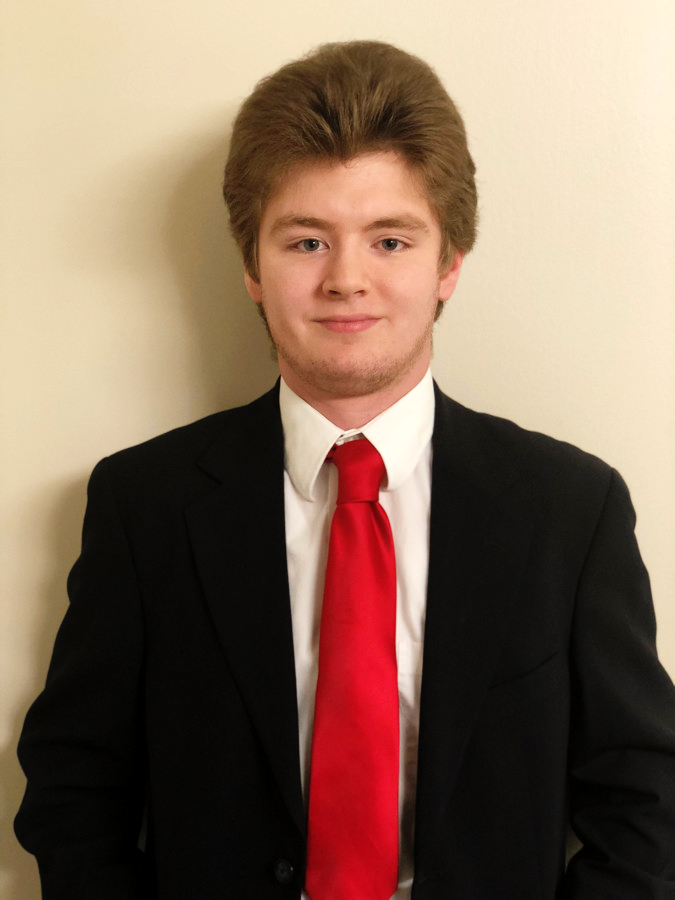

|  |
Joshua Crotts, Computer Sciene Student at UNCG CSC - 130 (Intro to Computer Science) Tutor & Grader ITS Learning Technology Graduate Assistant Natural Language Processing and Rhetorical Devices Undergraduate Researcher with Dr. Nancy Green Yes, I used Dr. Jing Deng's website code. It looks good and, more importantly, elegant. Email: ljcrotts@uncg.edu Phone: (336) 813-8541 |
My name is Larry Joshua Crotts (I go by Joshua!). I am a Computer Science student at the University of North Carolina at Greensboro. I have a long and driven interest in computer science, mathematics, theory, numbers, and all things technology. I am also interested in furthering computer science education potential, namely to communities and groups that may not have immediate access to computers or the knowledge to do such. I aspire to be a professor and return the education I have received thus far to the next generation of computer scientists and software engineers alike.
My interest started when I was around two years old; I would sit in my father's lap while he used the computer. I was mesmerized by all the things that you can do. As I grew, I began to play video games excessively. Once I reached around nine or ten years old, I made my first webpage. It was a simple blog for some photos that I took. However, that one website was the catalyst of my interest in creating things on the computer. I eventually gained interest in creating video games, as opposed to just playing them. At first, I used simple websites to create 2D sprite-based games with drag-and-drop elements. However, I quickly realized that I wanted to design my games from the ground up. That was when I discovered programming.
Once I started high school, I enrolled in a course called Multimedia and Webpage Design. And, while it was a very trivial course, it did show me the foundations of building a website from scratch in HTML and CSS. Moreover, after the summer of my freshman year, I took my first ever course on Computer Science. I was finally able to learn how to write code in C++ and Visual Basic. Now, did I build anything spectacular with these two languages in a tenth-grade level class? No, absolutely not. However, again, it continued my expand my programming horizons. Finally, in the eleventh grade, I took the renown course called AP Computer Science A. This, by far, was my favorite course in high school. Using the Java programming language, we walked through several labs and projects in preparation for the big AP exam in May. Nowadays, almost five years after taking AP CS A, I still have fond memories of my teacher, and the amazing students that left a significant impact on me.
My career in college did not start out at UNC Greensboro; for one year, I was at Forsyth Technical Community College, in an effort to save money before transferring to a four-year college. However, unfortunately (and fortunately now that I think about it!), due to a significant mistake on the community college's part, I was placed on an Associate in Applied Science path, instead of the typical transfer path, meaning I took course that would end up not transferring to UNCG. I had to correct this mistake myself, and, out of pure frustration, I applied to UNCG, thanks to the good word of mouth from my former AP CS teacher, who got in contact with the former head of the computer science department at UNCG. Successively, come the Fall of 2018, I began my fulfilling career as a Spartan.
After a slow start at UNCG (taking only four classes), I met my now fiancé, and took a whopping six classes in the Spring of 2019. My reputation grew exponentially once people realized that I was an outstanding programmer. From that semester alone, I gained a whole network of students and friends that I hope will last a lifetime. Additionally, due to the word of mouth in the department, I was contacted by a professor who asked me to be her research assistant on a project that summer (Summer of 2019). Of course, I was ecstatic, and gladfully accepted the offer. During the summer, I also applied to the Accelerated Bachelor's to Master's program in Computer Science, and, to my surprise, was accepted. This program allows students to get their Master's degree only one year after receiving their Bachelor's. This means that, during my final two years as an undergraduate student, I have to take four graduate-level classes. Very tough, but also incredibly exciting.
One arduous summer later of working on a complex and convoluted codebase, we enter the Fall 2019 semester. Like the previous semester, I took six classes, one of which was graduate-level (theory of computation, of course!). I also started my job as a teacher's assistant for the Intro to Computer Science course, where I would grade the lab assignments and tests, and, during the lab sessions, would walk around to any student requiring assistance. Additionally, I served as a tutor in one of the computer labs. This brings us to the current day, in the Spring of 2020, where I still work as a tutor and TA, but I also serve(d) on the Search Committee for a new assistant professor in the computer science department. I participate(d) in reviewing the copious amount of applications, narrowing the pool for video interviews, and finally the soon-to-come in-person interviews. It is really interesting to see the hiring process on both sides, as opposed to only sending out applications, and rarely hearing back from internships! By the end of the semester, we had all endured COVID-19 (and are still pushing through it to this very day), and my GPA was sadly no longer pristine (one A- in AI...). However, I've come to realize that a perfect GPA doesn't strictly define someone. I wanted to maintain a 4.0, but I am okay with what I have.
I love computer science. I love programming. I love mathematics, and theory. I also really enjoy helping others learn and grow in this very difficult and demanding field of study. Watching my students finally solve a complex problem that they have been stuck on for hours makes me grin very stupidly, because I remember back when I was in that initial phase. But, I should note that, that does not under any circumstances mean that I'm done learning. I'm far from that. In fact, as a computer scientist (and hopefully future instructor), I doubt I'll ever truly be done learning from others, as well as the constant new technologies that appear on the daily.
The following is a list of all the courses I have taken (or am registered for) of relevance to Computer Science at UNCG. Those listed in bold are graduate courses taken as an undergraduate. As such, they required extra work (e.g. writing a paper or project) than their undergraduate counterparts.
Fall 2020